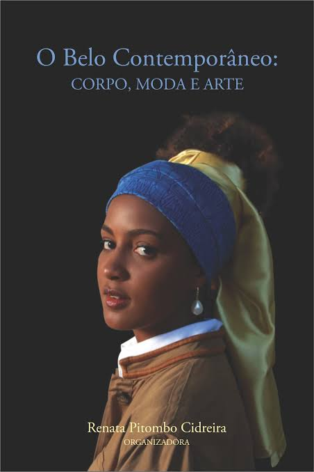

2020

O futebol no interior da Bahia, 1920–1940
Depois da Avenida Central: cultura, lazer e esportes no sertão do Brasil · p. 153–196 · ISBN 978-85-5662-260-0
Produção docente
Livros, coletâneas e outras produções que ajudam a visualizar sua trajetória intelectual no Curso de História da UFRB.
Bibliografia visual
Obras de autoria, coautoria, organização ou coorganização já reunidas no Memorial.
Percursos de pesquisa
Uma curadoria de capítulos representativos da trajetória de pesquisa. Cada capítulo aparece uma única vez, associado ao livro em que foi publicado; quando a capa da obra já está cadastrada no Memorial, ela aparece como miniatura.
Depois da Avenida Central: cultura, lazer e esportes no sertão do Brasil · p. 153–196 · ISBN 978-85-5662-260-0

O Belo Contemporâneo: corpo, moda e arte · p. 134–148

Os sports e as cidades brasileiras na transição do século XIX e XX · p. 213–239
Trajetória intelectual
A seleção permite acompanhar a passagem dos estudos sobre futebol e cultura esportiva em Salvador para pesquisas sobre imprensa, cidade, revistas ilustradas e cultura visual.
Mídia e Cotidiano, v. 19, p. 107–132, 2025.
Comunicação, Mídia e Consumo, v. 22, p. 444–473, 2025.
Dispositiva, v. 13, p. 45–66, 2024.
dObra[s], v. 14, p. 144–164, 2020.
Saeculum, 2013.
Recorde: Revista de História do Esporte, v. 5, 2012.
A relação completa da produção permanece disponível no Currículo Lattes do docente.